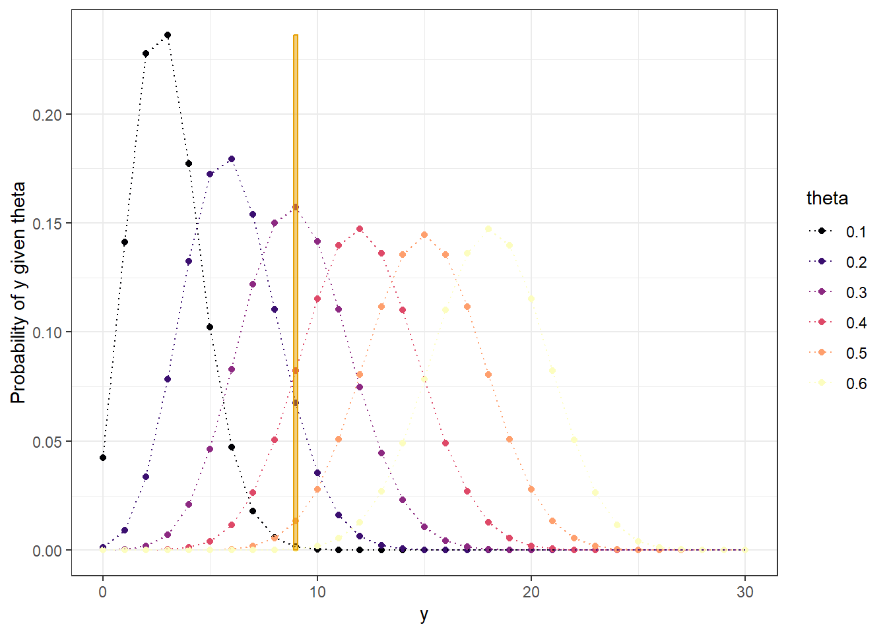
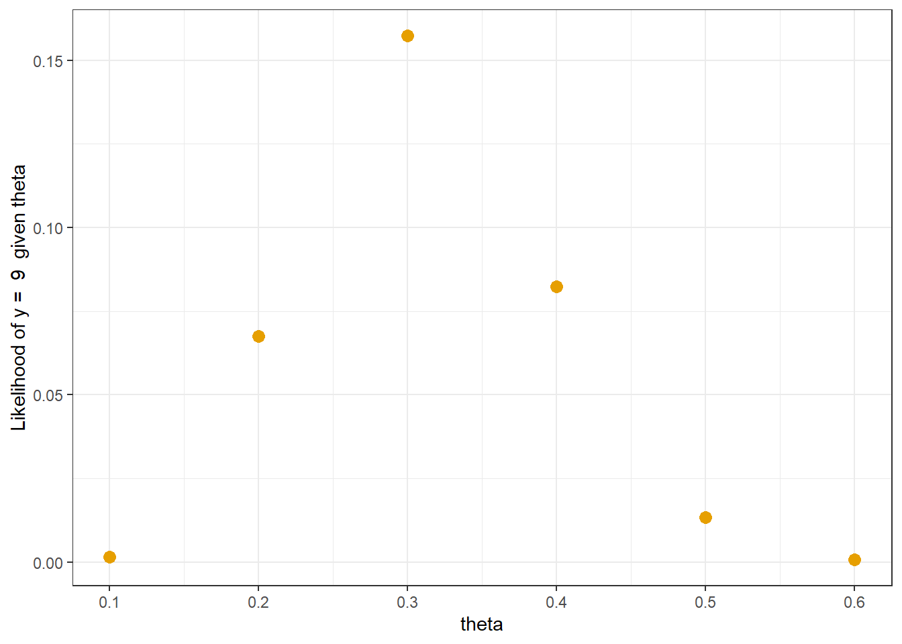
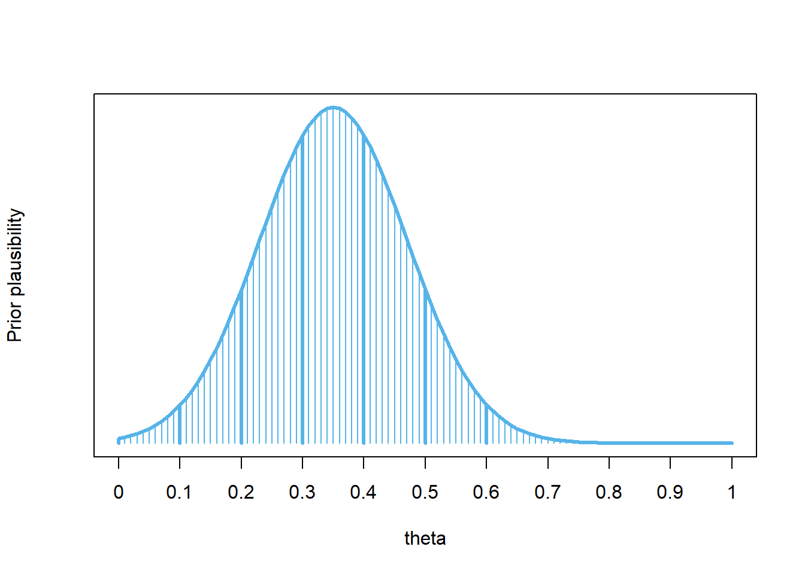

A recent survey claims that in 2022, 35% of U.S. adults participated in “Dry January” (abstaining from alcohol for the month). Suppose we’re interested in the proportion of all current Cal Poly students who will complete a Dry January in 2023. We’ll refer to this proportion as the “population proportion” and denote it as \(\theta\) (the Greek letter “theta”).
Before collecting any data, consider: What do you think is the most plausible value of \(\theta\)? What range of values would account for most, say 98%, of your plausibility?
Example 3.1 We’ll start by considering only the values 0.1, 0.2, 0.3, 0.4, 0.5, 0.6 as initially plausible for the population proportion \(\theta\). Suppose that before collecting sample data, our prior assessment is that:
0.2 is four times more plausible than 0.1
0.3 is two times more plausible than 0.2
0.3 and 0.4 are equally plausible
0.2 and 0.5 are equally plausible
0.1 and 0.6 are equally plausible
Construct a table to represent this prior distribution of \(\theta\) and sketch a plot of it. What does this distribution represent?
If we simulate many values of \(\theta\) according to the above distribution, on what proportion of repetitions would we expect to see a value of 0.1? If we conduct 260000 repetitions of the simulation, on how many repetitions would we expect to see a value of 0.1? Repeat for the other plausible values to make a table of what we would expect the simulation results to look like. (For now, we’re ignoring simulation variability; just consider the values we would expect.)
Example 3.2 The “prior” describes our initial assessment of plausibility of possible values of the population proportion \(\theta\) prior to observing data. Now suppose we observe a sample of \(n=30\) students in which \(y=9\) students complete Dry January. We want to update our assessment of the population proportion in light of the observed data.
In a previous example, we used a simulation to arrive at our “posterior” plausibility. Now we’ll look a little more closely at how the simulation works. Remember that to obtain the posterior from the simulation results, we conditioned on the observed data.
Suppose that the actual population proportion is \(\theta=0.1\). How could we use simulation to determine the likelihood of observing \(y=9\) students who complete Dry January in a sample of \(n=30\) students? How could we use math? (Hint: what is the probability distribution of the number of “successes” in a sample of size 30 when \(\theta=0.1\)?)
Recall the simulation with 260000 repetitions that we started above. Consider the 10000 repetitions in which \(\theta\) is 0.1. Suppose that for each of these 10000 repetitions we simulate the number of students in a sample of \(n=30\) who complete Dry January. On what proportion of these repetitions would we expect to see a sample count of \(y=9\)? On how many of these 10000 repetitions would we expect to see a sample count of \(y=9\)?
Repeat the previous parts for each of the possible values of \(\theta\): \(0.1, \ldots, 0.6\). Add two columns to the table: one column for the “likelihood” of observing a count of \(y=9\) in a sample of size \(n=30\) for each value of \(\theta\), and one column for the expected number of repetitions in the simulation which would result in the count of \(y=9\) for each value of \(\theta\).
Consider just the repetitions that resulted in a simulated sample count of \(y=9\). What proportion of these repetitions correspond to a \(\theta\) value of 0.1? Continue for the other possible values of \(\theta\) to construct the posterior distribution, and sketch a plot of it.
After observing a sample of \(n=30\) Cal Poly students with a sample proportion of \(y/n=9/30=0.3\) who complete Dry January, what can we say about the plausibility of possible values of the population proportion \(\theta\)? How has our assessment of plausibility changed from prior to observing the sample data? Which values are more plausible in our posterior assessment than they were in the prior? Less plausible? Does this make sense?
Example 3.3 The posterior distribution is a synthesis between the prior distribution and the observed data. Now we’ll investigate more closely how the prior and the data combine to produce the posterior distribution.
Prior to observing data, how many times more plausible is a value of 0.3 than 0.2 for the population proportion \(\theta\)?
Recall that we observed a sample count of \(y=9\) in a sample of size \(n=30\). How many times more likely is a count of \(y=9\) in a sample of size \(n=30\) if the population proportion \(\theta\) is 0.3 than if it is 0.2?
After observing data, how many times more plausible is 0.3 than 0.2 for the population proportion \(\theta\)?
How are the values from the three previous parts related?
Suggest a general principle for finding the posterior distribution of \(\theta\). Think in terms of a spreadsheet; what are the rows? What are the necessary columns and how would you fill them in?
Example 3.4 In the previous examples we only considered the values 0.1, 0.2, …, 0.6 as plausible. Now we’ll consider a more realistic scenario.
What is the problem with considering only the values 0.1, 0.2, …, 0.6 as plausible? How could we resolve this issue?
Suppose we have a prior distribution that assigns initial relative plausibility to a fine grid of possible values of the population proportion \(\theta\), e.g., 0, 0.0001, 0.0002, 0.0003, …, 0.9999, 1. We then observe a sample count of 9 in a sample of size 30. Explain the process we would use to construct a table like the one in the previous example to find the posterior distribution of the population proportion \(\theta\).
What are some questions of interest regarding \(\theta\)? How could you use the posterior distribution to answer them? That is, once you have the posterior distribution, what would you do with it? (See Figure 3.6 for a plot of a posterior distribution. The shape of this posterior distribution roughly follows a Normal distribution with mean 0.32 and standard deviation 0.10.)
3.1 Notes
3.1.1 Prior distribution
# possible values of thetatheta =seq(0.1, 0.6, by =0.1)# prior plausibilityprior_units =c(1, 4, 8, 8, 4, 1)# rescale to sum to 1prior = prior_units /sum(prior_units)bayes_table =data.frame(theta, prior_units, prior)# expected simulationn_reps =sum(prior_units) *10000bayes_table = bayes_table |>mutate(prior_reps = prior * n_reps)bayes_table |>adorn_totals("row") |>kbl(col.names =c("Population proportion","Prior \"Units\" ","Prior","Number of reps"),digits =4) |>kable_styling()
Distribution of sample count \(y\) for each possible value of \(\theta\). Evaluate the probability of observing \(y=9\) for each value of \(\theta\) to obtain the likelihood (from a Binomial(\(n=30\), \(\theta\)) distribution).
# observed datan =30y_obs =9# distribution of y for each value of thetasampling_distribution_table =expand_grid(theta,y =0:n) |>mutate(prob =dbinom(y, n, theta))sampling_distribution_table |>mutate(theta =factor(theta)) |>ggplot(aes(x = y,y = prob,col = theta)) +geom_point() +geom_line(linetype ="dotted") +scale_color_viridis_d(option ="magma") +# highlight observed yannotate("rect", xmin = y_obs -0.1, xmax = y_obs +0.1,ymin =0, ymax =max(sampling_distribution_table["prob"]), alpha =0.5,color = bayes_col["likelihood"],fill = bayes_col["likelihood"]) +labs(y ="Probability of y given theta") +theme_bw()# evaluate likelihood of y = 9 for each thetabayes_table = bayes_table |>mutate(likelihood =dbinom(y_obs, n, theta))# plot the likelihoodbayes_table |>ggplot(aes(x = theta,y = likelihood)) +geom_point(col = bayes_col["likelihood"], size =3) +scale_x_continuous(breaks = theta) +labs(y =paste("Likelihood of y = ", y_obs, " given theta")) +theme_bw()

Figure 3.2: Distribution of y for each theta (y = 9 is highlighted)

Figure 3.3: Likelihood of observing y = 9 for each theta
3.1.3 Posterior distribution
bayes_table = bayes_table |>mutate(post_reps =round(likelihood * prior_reps, 0),posterior = post_reps /sum(post_reps))bayes_table |>adorn_totals("row") |>kbl(align ="r",col.names =c("theta","Prior \"Units\" ","Prior","Number of reps",paste("Likelihood of y = ", y_obs),paste("Reps with y = ", y_obs),"Posterior"),digits =4) |>kable_styling()
Figure 3.4: Comparison of prior distribution, (scaled) likelihood, and posterior distribution
3.1.4 Posterior is proportional to the product of prior and likelihood
These are the same calculations as before, just streamlined a little.
# possible values of thetatheta =seq(0.1, 0.6, by =0.1)# prior distributionprior_units =c(1, 4, 8, 8, 4, 1)prior = prior_units /sum(prior_units)# observed datan =30y_obs =9# likelihood of observed data for each thetalikelihood =dbinom(y_obs, n, theta)# posterior is proportional to product of prior and likelihoodproduct = prior * likelihoodposterior = product /sum(product)bayes_table =data.frame(theta, prior, likelihood, product, posterior)bayes_table |>adorn_totals("row") |>kbl(digits =4) |>kable_styling()
theta
prior
likelihood
product
posterior
0.1
0.0385
0.0016
0.0001
0.0007
0.2
0.1538
0.0676
0.0104
0.1205
0.3
0.3077
0.1573
0.0484
0.5612
0.4
0.3077
0.0823
0.0253
0.2935
0.5
0.1538
0.0133
0.0020
0.0238
0.6
0.0385
0.0006
0.0000
0.0003
Total
1.0000
0.3227
0.0862
1.0000
3.1.5 Grid approximation
This is just one possible prior, that matches up with our prior from before at \(\theta =\) 0.1, …, 0.6. (This particular prior follows the shape of a Normal distribution with mean 0.35 and standard deviation 0.12, but just think of this shape as “smoothly connecting the dots” in our original prior.)

Figure 3.5: A smooth prior
The “spreadsheet” calculation is the same as before; there are just more rows in the spreadsheet. (And we define prior plausibility for all possible values of \(\theta\).)
# possible values of thetatheta =seq(0, 1, by =0.0001)# prior distributionprior_units =dnorm(theta, 0.35, 0.12)prior = prior_units /sum(prior_units)# observed datan =30y_obs =9# likelihood of observed data for each thetalikelihood =dbinom(y_obs, n, theta)# posterior is proportional to product of prior and likelihoodproduct = prior * likelihoodposterior = product /sum(product)bayes_table =data.frame(theta, prior, likelihood, product, posterior)bayes_table |># select a few rows to displayslice(seq(2001, 4001, 250)) |>kbl(digits =8) |>kable_styling()